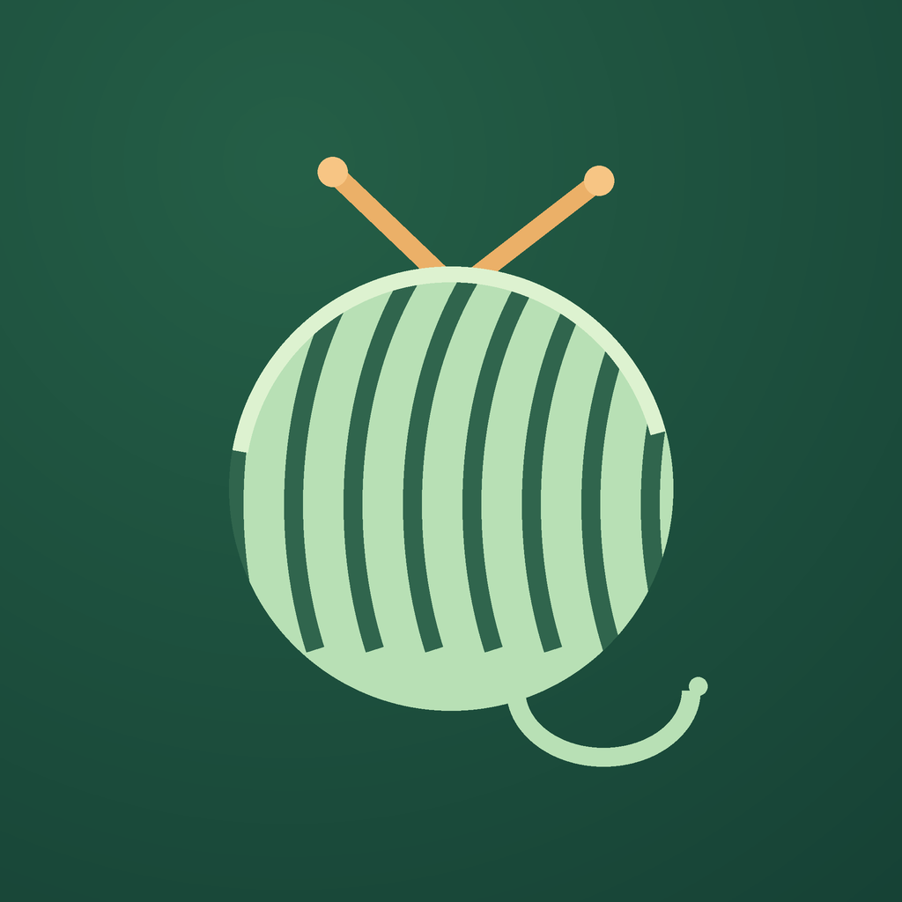

Last updated: October 29, 2026
jay212315@gmail.com
Enable JavaScript to switch languages. Contact jay212315@gmail.com for a copy of the privacy policy or support information.
Tap New project, choose a type, and optionally enter a name. Set the number of fully completed rows; leave it at zero for a new piece. Optionally add a pattern repeat or a row cue.
The large number is the row you are about to work. Only tap Row complete after finishing the entire row. “Completed” shows the rows already done. A partially finished row and its individual stitches are not tracked.
Set rows per repeat to track your position in a repeating pattern. For a decrease every six rows starting at row six, set First cue at row to 6 and Repeat every to 6. The cue appears before working row 6, 12, 18, and so on. Follow your own pattern for stitch counts and techniques.
Tap Undo on the counter screen. The previous progress change is reversed, together with the repeat position and row cue. Up to 200 recent progress changes per project are retained for undo. Undo does not restore deleted projects or earlier project settings.
Open the … project menu. Use Frog back to subtract unraveled completed rows, or Adjust progress to enter the correct number of fully completed rows. Review the destination row before confirming. Both changes can be undone.
Progress saves after each successful change. Reopening the app resumes the last active project. Return to the project list to switch projects. Archive finished pieces to keep them without clutter; restore them from Archived. Deleting a project requires confirmation and cannot be undone.
Add the RowCue complication to a compatible watch face. Tap it to open the last active project. It is a launcher; it does not display live row counts on the watch face. Available positions depend on the watch face.
Open Settings to choose System, English, Simplified Chinese, or Japanese. Haptic feedback can be switched off there. Touch feedback and wrist visibility also depend on your watch’s settings.
RowCue has no app-operated cloud sync or export feature. Do not treat it as your only copy of a critical pattern or project record. If a saved file is damaged, the app may restore the preceding local copy and ask you to check the count. If neither copy can be read, original files are preserved and editing is blocked.
RowCue is designed for a one-time App Store purchase. The price and availability are shown by the App Store. Apple handles payments, purchase history, and refund requests. Purchase access does not restore local project data.
Email jay212315@gmail.com. Include your watch model, watchOS version, RowCue version, and the steps that led to the issue. A screenshot is helpful if you are comfortable sharing it. Do not include passwords or payment information.